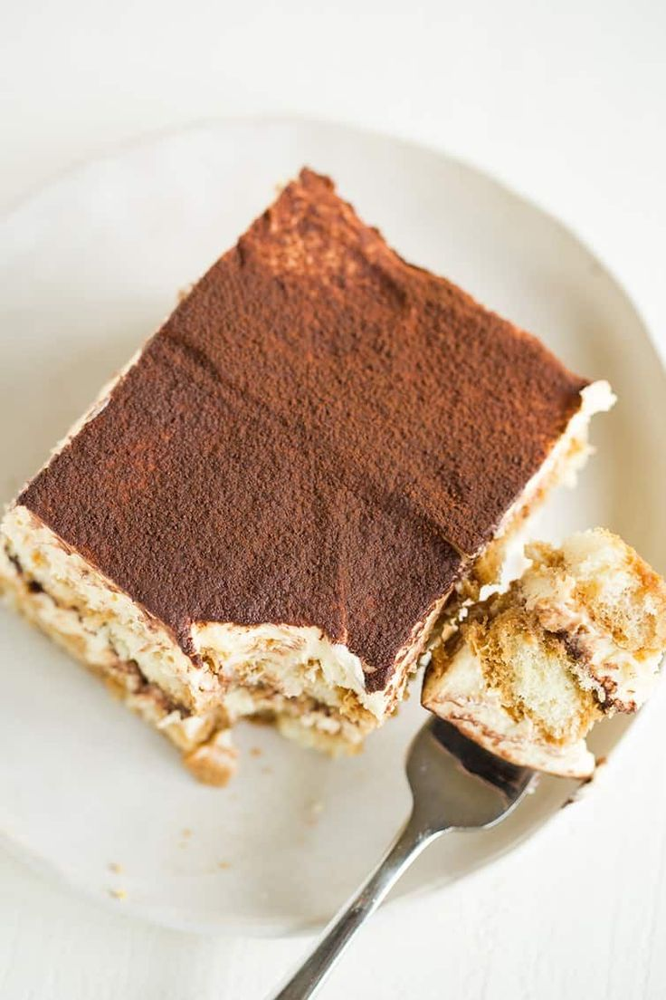

Receta de Tiramisú Italiano

Ingredientes:
- 500 g de queso mascarpone
- 3 huevos
- 100 g de azúcar
- 200 g de vainillas
- 1 taza de café
- Cacao amargo
Paso a paso:
- Separar las claras de las yemas. Batir las yemas con el azúcar hasta lograr una crema clara y espesa
- Agregar el mascarpone a la mezcla de yemas y batir hasta integrar bien.
- Batir las claras a punto nieve y agregarlas a la mezcla anterior con movimientos envolventes para no perder aire.
- Mojar las vainillas en el café rápidamente (que no se ablanden demasiado).
- Armar el tiramisú en una fuente: capa de vainillas, capa de crema. Repetir hasta terminar.
- Llevar a la heladera por al menos 3 horas.
- Antes de servir, espolvorear con cacao amargo.